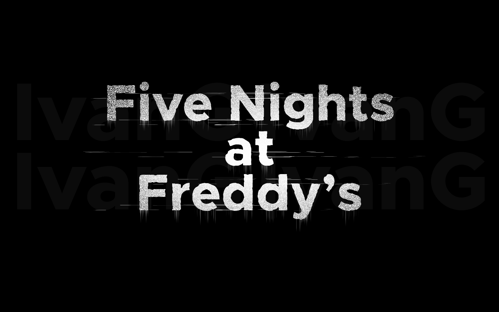
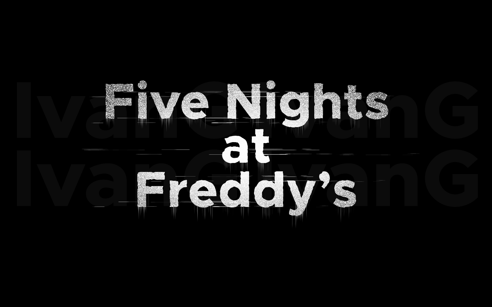

UNDER CONSTRUCTION
Please wait patiently for the dropdown update. (update 14).
 



Looped so hit pause to stop audio clips.
FNAF 1 March of the Toreadors
foxy jumpscare... optional placement
fnaf 1 jumpscare... optional placement
©Benjamin Watts 2022-2023
Made with Replit.com